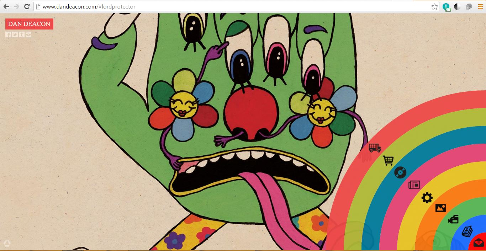

Design for the WWW
Dan Deacon Website

This site is for Baltimore-based experimental electronic musician Dan Deacon. I really like the use of an illustration in the background of the home page which represents his artsy aesthetic. I also like the non-traditional navigation bar on the right side of the page that utilizes a rainbow form with icons that represent the different pages you would navigate to: tour, store, video, etc.